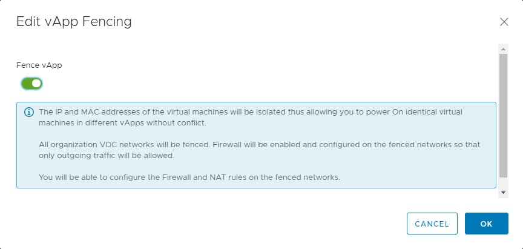

How to create a vApp network
Overview
In addition to virtual data centre (VDC) networking, you can create individual vApp networks to have even greater control over your network infrastructure.
vApp networks enable you to create smaller networks within individual vApps that have a vApp edge, similar to the edge gateway on your VDC. Although a vApp edge isn't as feature rich as a VDC edge, it enables you to create firewall and NAT rules to separate your VDC networks from your vApp virtual machines (VMs). This means you can create some quite complex networks to satisfy application needs.
The vApp network diagram below shows the vApp edge.

Creating a vApp network
Note
As you're going to be changing network settings, all VMs within the vApp must be powered off.
In the VMware Cloud Director Virtual Data Center dashboard, select the VDC that contains the vApp.
In the left navigation panel, select vApps.

In the card for the vApp, select Actions, then Add Network.

In the Add Network dialog box, select vApp Network.
Enter a Name and Description for the network.
In the Address and DNS section, fill out the fields as required for your network.

When you're done, click Add.
Connecting a VM to a vApp network
If your vApp is already populated with VMs that are connected to a VDC network, you may want to move them over to the vApp network.
To change the network a VM connects to:
In the card for the vApp, select Details.
Select Virtual Machines.
For each VM
a. Click the VM to edit the VM properties.
b. Under Hardware, select NICs.
c. Click Edit.

d. In the Edit NICs dialog box, from the Network list, select the vApp network.

If you want to dual-home your VM, click New to add a second network.
When you're done, click Save.
You can go back to the VM hardware properties to see the new IP address assigned to the VM.
Viewing and adjusting vApp network settings
When you've created your vApp network and assigned VMs to it, you may want to review the vApp network settings and adjust them if needed.
In the left navigation panel, select vApps.
In the card for the vApp, select Details.
Select Networks.
Click your vApp network to view its network settings.
The General page displays general network settings. Click Edit to adjust these settings.
The IP Management pages display the IP settings for the vApp network, including Static Pools, DNS and DHCP. Click Edit on these pages to adjust these settings.
For more information about enabling DHCP for your vApp network, see *Enabling DHCP.
On the Services page you can set up firewall and NAT rules for your vApp network. For more information, see Creating firewall rules and Creating NAT rules.
On the Routing page you can create static routes for your vApp network. For more information, see Creating static routes.
Enabling DHCP
DHCP isn't enabled by default.
For more information about DHCP, see How to create a DHCP pool.
To enable DHCP:
In the left navigation panel, select vApps.
In the card for the vApp, select Details.
Select Networks.
Click your vApp network to view its network settings.
Under IP Management, select DHCP.
Click Edit.

In the Edit network dialog box, select the Enabled option.
Enter IP Pool and lease information for your DHCP addresses then click Save.

Creating firewall rules
There will be a rule in place to allow any traffic to traverse the firewall. You can amend or delete this rule, or create new rules.
For more about firewall rules, see How to create firewall rules.
To create a firewall rule:
In the left navigation panel, select vApps.
In the card for the vApp, select Details.
Select Networks.
Click your vApp network to view its network settings.
Select Services.
Click Edit.

On the Firewall tab, click Add, specify the details for the firewall rule then click Save.

Creating NAT rules
NAT rules, enabled by default, enable mapping between internal VM interfaces and external IP addresses.
For more information about NAT rules, see How to create NAT rules.
To edit the mapping rules for a VM:
In the left navigation panel, select vApps.
In the card for the vApp, select Details.
Select Networks.
Click your vApp network to view its network settings.
Select Services.
Click Edit.
Select the NAT tab.
From the NAT Type list, select IP Translation, then click Add.
In the VM Interface field, click the edit (pencil) icon, then select the VM interface for which you want to add the NAT rule, then click Keep.
From the Mapping Mode list, select the mapping mode.
The default mapping is Automatic. You can change this to Manual, in which case, enter an External IP address to which the VM can map.

When you're done, click Save.
The external IP address will be on the same subnet as the VDC network that connects to the vApp edge.
Creating static routes
Static routing at the vApp network level allows traffic to route between different vApp networks, across the VDC networks.
The prerequisites for static routing are as follows:
Static routing must be enabled for the VDC network you're connecting to (see How to create a static route).
The two vApp networks must be routed to the same VDC network.
The vApp networks must be in vApps that have been started at least once.
To add a static route:
In the left navigation panel, select vApps.
In the card for the vApp, select Details.
Select Networks.
Click the first vApp network to view its network settings.
Select Routing.
Click Edit.

In the Edit Static Routing Service dialog box, select the Enable Static Routing option then click Save.

Click Add.

In the Add Static Route dialog box, enter a Name for the static route.
Enter the following details:
Network CIDR - The address of the first vApp network to which you're adding a static route
Next Hop IP - The external IP address of that vApp network's router

When you're done, click Save.
Repeat for the second vApp network.
Examples
The tables below provides examples of the settings needed to create a static route between two vApps.
Network information
| Network name | Network specification | Router external IP address |
|---|---|---|
| vApp network 1 | 192.168.1.0/24 |
192.168.0.100 |
| vApp network 2 | 192.168.2.0/24 |
192.168.0.101 |
| VDC network shared | 192.168.0.0/24 |
N/A |
Static routing settings
| Static route to network | Route name | Network | Next hop IP address |
|---|---|---|---|
| vApp network 1 | To-vapp1 | 192.168.1.0/24 |
192.168.0.100 |
| vApp network 2 | To-vapp2 | 192.168.2.0/24 |
192.168.0.101 |
Note
Make sure your firewall rules allow traffic on the static routes.
vApp fencing
Fencing a vApp allows identical VMs within different vApps to be powered on without conflict, by isolating the MAC and IP addresses of the VMs. This feature is particularly useful if you are copying vApps or creating catalog images of vApps where these details can't be altered.
vApp fencing can be done during or after vApp creation. It is done when the VMs within the vApp sit on the VDC network, rather than on their own vApp network.
To apply vApp fencing:
In the left navigation panel, select vApps.
In the card for the vApp, select Details.
Select Networks.
In the vApp Fencing section, click Edit.

Select the Fence vApp option then click OK.

Feedback
If you find a problem with this article, click Improve this Doc to make the change yourself or raise an issue in GitHub. If you have an idea for how we could improve any of our services, send an email to feedback@ukcloud.com.